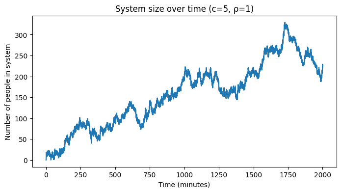
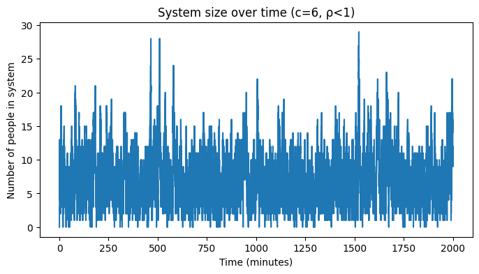
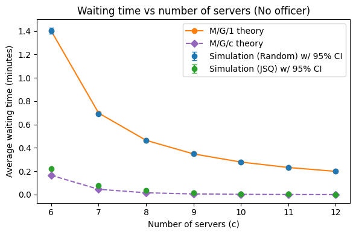
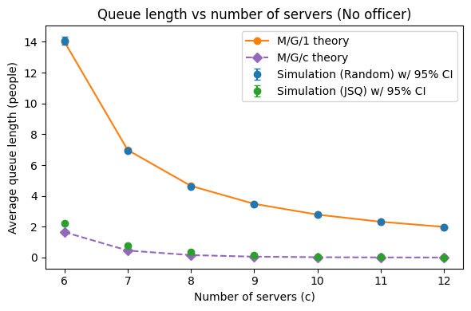
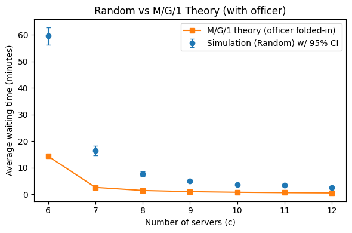
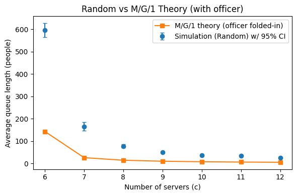
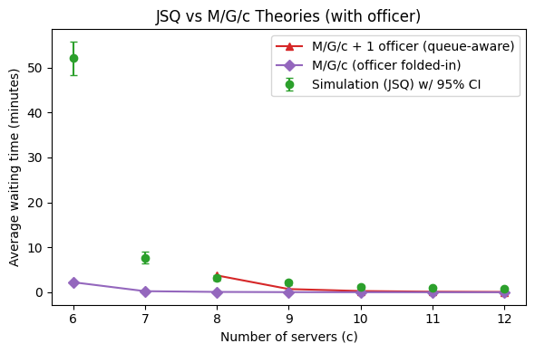
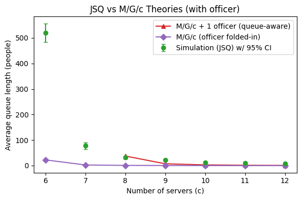

CS166 Modeling and Analysis of Complex Systems
Prof. Tambasco :)
import heapq
import numpy as np
from dataclasses import dataclass, field
from tqdm import tqdm
# helper
def truncnorm_pos(mean, sd, rng):
"""
Draw a single sample from N(mean, sd) truncated to (0, +∞).
"""
x = rng.normal(loc=mean, scale=sd)
while x <= 0:
x = rng.normal(loc=mean, scale=sd)
return x
@dataclass # decorator that automatically generates the boilerplate methods
# (__init__, __repr__, __eq__) which is nice
class Traveler:
"""
A traveler entering the system
"""
id: int
arrival_time: float # Time (minutes) the traveler arrives and joins a queue.
need_extra: bool = False # do they need extra screening? default is False
start_service_time: float = None # set when service begins
@dataclass(order=True) # automatically generate comparison methods!
class Event:
"""
A scheduled event in the simulation, ordered by time then sort_index.
"""
time: float
sort_index: int # tie-breaker if 2+ events are scheduled at the same time (rare)
# since we want a deterministic ordering for all cases.
kind: str = field(compare=False, default="")
payload: dict = field(compare=False, default_factory=dict)
class SecurityStation:
"""One screening lane with its own FIFO queue."""
def __init__(self, idx, mean_service_min, sd_service_min):
self.idx = idx
self.queue = [] # FIFO of Travelers waiting (not in service)
self.busy = False
self.locked_for_extra = False # True when a traveler is with senior officer
self.mean_s = mean_service_min
self.sd_s = sd_service_min
class SeniorOfficer:
"""Single senior officer handling additional screening sequentially."""
def __init__(self, mean_extra_min, sd_extra_min):
self.busy = False
self.queue = [] # FIFO of dicts: {'station': station, 'trav': traveler}
self.mean_e = mean_extra_min
self.sd_e = sd_extra_min
# The Simulator
class AirportSim:
"""
Discrete-event simulation of airport security queues (CS166, F25).
Travelers arrive as a Poisson process; join the shortest queue; service times are truncated-normal.
With prob p_extra, the front traveler needs additional screening by a single senior officer.
While extra screening happens for the front traveler, that station is blocked (no one else is processed).
"""
def __init__(self,
n_stations=6,
arrival_rate_per_min=10.0, # λ
mean_service_sec=30.0, sd_service_sec=10.0,
p_extra=0.03,
mean_extra_min=2.0, sd_extra_min=2.0,
sim_minutes=60*24,
rng_seed=0,
debug = False):
self.rng = np.random.default_rng(rng_seed) # a new random number generator object with seed
# so it's reproducible
self.clock = 0.0
self.end_time = float(sim_minutes)
# Units
self.arrival_rate = float(arrival_rate_per_min)
self.p_extra = float(p_extra)
# Convert service seconds -> minutes
mean_s = mean_service_sec / 60.0
sd_s = sd_service_sec / 60.0
self.stations = [SecurityStation(i, mean_s, sd_s) for i in range(n_stations)]
self.officer = SeniorOfficer(mean_extra_min, sd_extra_min)
# Event list
self._evcount = 0
self.events = []
# Metrics
self.wait_times = [] # per traveler who actually started service
self.area_q = 0.0 # time-integral of total waiting count
self.last_t = 0.0
self.max_q_len = 0
self.total_processed = 0
# Id counter
self.next_trav_id = 0
# Pre-schedule first arrival
self._schedule(self._next_arrival_time(self.clock), "ARRIVAL", {})
self.debug = debug
# utilities
def _schedule(self, t, kind, payload):
""" Whenever the simulation wants something to happen in the future (like a new arrival,
a service finishing, or extra screening ending), this creates an Event for that time
and puts it in the priority queue."""
if t is None:
return
self._evcount += 1
heapq.heappush(self.events, Event(time=t, sort_index=self._evcount, kind=kind, payload=payload))
def _update_queue_area(self, new_time):
""" Time-average queue length: integrate total waiting across all stations."""
dt = max(0.0, min(new_time, self.end_time) - self.last_t) # how much time passed since last update
if dt > 0:
total_waiting = sum(len(s.queue) for s in self.stations)
self.area_q += total_waiting * dt
self.max_q_len = max(self.max_q_len, total_waiting)
self.last_t = new_time
def _bump_max(self):
"""Update instantaneous max queue length (in case of events happening at the same time)."""
total_waiting = sum(len(s.queue) for s in self.stations)
if total_waiting > self.max_q_len:
self.max_q_len = total_waiting
def _next_arrival_time(self, now):
""" Poisson arrivals with rate λ (per minute)."""
if self.arrival_rate <= 0:
return None
return now + self.rng.exponential(1.0 / self.arrival_rate)
def _sample_service(self):
"""Sample a (positive) service time in minutes from truncated-normal."""
return truncnorm_pos(self.stations[0].mean_s, self.stations[0].sd_s, self.rng)
def _sample_extra(self):
"""Sample a (positive) extra-screening time in minutes from truncated-normal."""
return truncnorm_pos(self.officer.mean_e, self.officer.sd_e, self.rng)
def _choose_shortest_queue(self):
"""
Choose the station with the smallest effective queue length.
Effective length counts:
- waiting travelers: len(queue)
- +1 if the server is currently busy
- +1 if the server is locked due to extra screening
Ties are broken uniformly at random.
"""
sizes = []
for s in self.stations:
add = (1 if s.busy else 0) + (1 if s.locked_for_extra else 0)
sizes.append(len(s.queue) + add)
# Break ties uniformly
min_size = min(sizes)
cand = [i for i, v in enumerate(sizes) if v == min_size]
return self.stations[int(self.rng.choice(cand))]
# event handlers
def _on_arrival(self, ev):
"""
Handle an arrival:
- Create a Traveler and push into the chosen lane's waiting queue.
- If that lane is idle and unlocked, start service immediately.
- Schedule the next arrival if within the horizon.
"""
if self.clock <= self.end_time:
# Create traveler
trav = Traveler(id=self.next_trav_id, arrival_time=self.clock)
self.next_trav_id += 1
# DEBUG: snapshot sizes BEFORE assignment (waiting + busy + locked)
if self.debug:
sizes_before = []
for s in self.stations:
add = (1 if s.busy else 0) + (1 if s.locked_for_extra else 0)
sizes_before.append(len(s.queue) + add)
# Join shortest queue
st = self._choose_shortest_queue()
st.queue.append(trav)
# DEBUG: assert chosen is an argmin
if self.debug:
assert sizes_before[st.idx] == min(sizes_before), (
f"At t={self.clock:.2f}, joined lane {st.idx} but sizes were {sizes_before}"
)
print(f"t={self.clock:.2f}, traveler {trav.id} → lane {st.idx}, sizes_before={sizes_before}")
# If station is idle and not locked, start immediately
if (not st.busy) and (not st.locked_for_extra) and st.queue and st.queue[0] is trav:
self._schedule(self.clock, "START_SERVICE", {"station": st})
# Schedule next arrival (within day)
tA = self._next_arrival_time(self.clock)
if tA is not None and tA <= self.end_time:
self._schedule(tA, "ARRIVAL", {})
def _on_start_service(self, ev):
"""
Start serving the traveler at the front of the lane:
- Pop them from the waiting queue (so waiting metrics track true 'waiting').
- Record their wait; mark the lane busy.
- Schedule the corresponding END_SERVICE.
"""
st = ev.payload["station"]
# DEBUG ASSERT: a locked lane must never start service
if self.debug:
if st.locked_for_extra:
raise AssertionError(
f"Start-service attempted while lane {st.idx} is LOCKED at t={self.clock:.2f}"
)
if st.locked_for_extra or st.busy or not st.queue:
return
# record queue length before popping
q_before = len(st.queue)
# Remove the traveler from the waiting queue at service start
trav = st.queue.pop(0)
trav.start_service_time = self.clock
wait = trav.start_service_time - trav.arrival_time
self.wait_times.append(wait)
st.busy = True
if self.debug:
print(f"[{self.clock:.2f}] START_SERVICE lane {st.idx} "
f"q_before={q_before} q_after={len(st.queue)}")
# schedule end of service
s_time = self._sample_service()
self._schedule(self.clock + s_time, "END_SERVICE", {"station": st, "trav": trav})
def _on_end_service(self, ev):
"""
Finish base service:
- With probability p_extra, lock the station and enqueue traveler to officer.
- Otherwise, traveler exits and the lane may start next service immediately.
"""
st = ev.payload["station"]
trav = ev.payload["trav"]
st.busy = False
trav.need_extra = (self.rng.random() < self.p_extra)
if trav.need_extra:
st.locked_for_extra = True
self.officer.queue.append({"station": st, "trav": trav, "request_time": self.clock})
if self.debug:
print(f"[{self.clock:.2f}] END_SERVICE lane {st.idx} → EXTRA (LOCK lane)")
if not self.officer.busy:
self._schedule(self.clock, "START_EXTRA", {})
else:
self.total_processed += 1
if self.debug:
print(f"[{self.clock:.2f}] END_SERVICE lane {st.idx} → EXIT (no extra)")
if st.queue and (not st.locked_for_extra) and (not st.busy) and self.clock <= self.end_time:
self._schedule(self.clock, "START_SERVICE", {"station": st})
def _on_start_extra(self, ev):
"""
Officer begins the next extra-screening job if available.
Schedules END_EXTRA accordingly.
"""
if self.officer.busy or not self.officer.queue:
return
job = self.officer.queue.pop(0)
st, trav = job["station"], job["trav"]
self.officer.busy = True
if self.debug:
print(f"[{self.clock:.2f}] Officer START extra on lane {st.idx} (trav {trav.id}); lane LOCKED={st.locked_for_extra}")
e_time = self._sample_extra()
self._schedule(self.clock + e_time, "END_EXTRA", {"station": st, "trav": trav})
def _on_end_extra(self, ev):
"""
Officer finishes extra screening:
- Unlock the corresponding lane.
- Traveler completes; lane can start next service if anyone is waiting.
- If officer queue still has work, start the next job immediately.
"""
st = ev.payload["station"]
trav = ev.payload["trav"]
self.officer.busy = False
st.locked_for_extra = False
self.total_processed += 1
if self.debug:
print(f"[{self.clock:.2f}] Officer END extra on lane {st.idx} (trav {trav.id}); lane UNLOCKED={st.locked_for_extra}")
# Station may serve next traveler
if st.queue and (not st.busy) and self.clock <= self.end_time:
self._schedule(self.clock, "START_SERVICE", {"station": st})
# Officer can immediately start next extra job if queued
if self.officer.queue:
self._schedule(self.clock, "START_EXTRA", {})
# main loop
def run(self, record_fn=None):
"""
Run the discrete-event simulation until:
- events are exhausted, or
- clock passes `end_time` (except we allow END_EXTRA to finish cleanly).
If record_fn is provided, it will be called as
record_fn(self, ev_time, ev_kind) at each popped event time.
Returns
-------
dict
Aggregated metrics:
{
"avg_wait_min": float,
"avg_queue_len": float,
"max_queue_len": int,
"processed": int,
"observed_travelers_started": int
}
"""
while self.events:
ev = heapq.heappop(self.events)
# Advance time + update time-avg queue stats up to ev.time
self._update_queue_area(ev.time)
self.clock = ev.time
if record_fn is not None:
record_fn(self, ev.time, ev.kind)
if ev.kind == "ARRIVAL":
self._on_arrival(ev)
elif ev.kind == "START_SERVICE":
self._on_start_service(ev)
elif ev.kind == "END_SERVICE":
self._on_end_service(ev)
elif ev.kind == "START_EXTRA":
self._on_start_extra(ev)
elif ev.kind == "END_EXTRA":
self._on_end_extra(ev)
self._bump_max() # capture instantaneous max even when dt == 0
# Stop if we've passed the day; we still integrated queue up to end_time
if self.clock > self.end_time and ev.kind != "END_EXTRA":
break
# Finalize statistics (average queue length over the day window only)
avg_q_len = self.area_q / max(1e-9, self.end_time) # minutes cancel out
avg_wait = float(np.mean(self.wait_times)) if self.wait_times else 0.0
return {
"avg_wait_min": avg_wait,
"avg_queue_len": avg_q_len,
"max_queue_len": self.max_q_len,
"processed": self.total_processed,
"observed_travelers_started": len(self.wait_times)
}
To verify that travelers really join the shortest queue, I added a
debug flag to the simulator so that internal checks and
logs can be toggled on without modifying the code. With
debug=True, the simulator records the effective queue sizes
of all lanes at each arrival instant (including waiting, busy, and
locked counts). It then asserts that the lane chosen by
_choose_shortest_queue has the minimum size among all lanes
(ties are allowed). The debug print also shows the sizes before the
traveler joined and which lane they entered. Running a test case with
multiple lanes and frequent arrivals confirms this: every arrival
message shows the traveler assigned to one of the lanes with the
smallest queue, and the assertion would raise an error if this rule were
ever violated.
# Run a short sim with debug assert enabled
# print and assert statements are commented out for the future
sim = AirportSim(
n_stations=3,
arrival_rate_per_min=2.0, # frequent arrivals
mean_service_sec=1000, sd_service_sec=1,
p_extra=0.0, # no officer
sim_minutes=5, # short run
rng_seed=42,
debug = True
)
res = sim.run()
print("Final results:", res)t=1.20, traveler 0 → lane 1, sizes_before=[0, 0, 0]
[1.20] START_SERVICE lane 1 q_before=1 q_after=0
t=2.39, traveler 1 → lane 0, sizes_before=[0, 1, 0]
[2.39] START_SERVICE lane 0 q_before=1 q_after=0
t=2.44, traveler 2 → lane 2, sizes_before=[1, 1, 0]
[2.44] START_SERVICE lane 2 q_before=1 q_after=0
t=3.14, traveler 3 → lane 1, sizes_before=[1, 1, 1]
t=3.67, traveler 4 → lane 0, sizes_before=[1, 2, 1]
t=3.70, traveler 5 → lane 2, sizes_before=[2, 2, 1]
t=4.25, traveler 6 → lane 2, sizes_before=[2, 2, 2]
t=4.44, traveler 7 → lane 1, sizes_before=[2, 2, 3]
[17.88] END_SERVICE lane 1 → EXIT (no extra)
Final results: {'avg_wait_min': 0.0, 'avg_queue_len': 1.1610667123815088, 'max_queue_len': 5, 'processed': 1, 'observed_travelers_started': 3}
You can see that only the shortest queue gets appended whenever a new traveler comes.
To confirm that a lane is truly blocked during extra screening, I used the debug flag to track when a lane is locked and unlocked. With debug mode on, the simulation shows messages when a traveler is sent for extra screening and the lane is locked, and again when the officer finishes and the lane is unlocked. During the locked period, no new service is allowed to start, and the debug check will raise an error if it ever does. This makes it clear that the lane stays blocked until extra screening is complete.
sim = AirportSim(
n_stations=1,
arrival_rate_per_min=1.0,
mean_service_sec=30, # 0.5 min base service
sd_service_sec=5,
p_extra=1.0, # force extra every time --> guarantees locking
mean_extra_min=1.0,
sd_extra_min=0.5,
sim_minutes=6.0,
rng_seed=123,
debug = True
)
res = sim.run()
print(res)
t=0.60, traveler 0 → lane 0, sizes_before=[0]
[0.60] START_SERVICE lane 0 q_before=1 q_after=0
t=0.71, traveler 1 → lane 0, sizes_before=[1]
t=1.02, traveler 2 → lane 0, sizes_before=[2]
t=1.11, traveler 3 → lane 0, sizes_before=[3]
[1.20] END_SERVICE lane 0 → EXTRA (LOCK lane)
[1.20] Officer START extra on lane 0 (trav 0); lane LOCKED=True
[2.48] Officer END extra on lane 0 (trav 0); lane UNLOCKED=False
[2.48] START_SERVICE lane 0 q_before=3 q_after=2
[2.95] END_SERVICE lane 0 → EXTRA (LOCK lane)
[2.95] Officer START extra on lane 0 (trav 1); lane LOCKED=True
t=3.47, traveler 4 → lane 0, sizes_before=[3]
t=3.83, traveler 5 → lane 0, sizes_before=[4]
[4.00] Officer END extra on lane 0 (trav 1); lane UNLOCKED=False
[4.00] START_SERVICE lane 0 q_before=4 q_after=3
[4.44] END_SERVICE lane 0 → EXTRA (LOCK lane)
[4.44] Officer START extra on lane 0 (trav 2); lane LOCKED=True
t=5.46, traveler 6 → lane 0, sizes_before=[4]
[5.51] Officer END extra on lane 0 (trav 2); lane UNLOCKED=False
[5.51] START_SERVICE lane 0 q_before=4 q_after=3
[5.95] END_SERVICE lane 0 → EXTRA (LOCK lane)
[5.95] Officer START extra on lane 0 (trav 3); lane LOCKED=True
[7.12] Officer END extra on lane 0 (trav 3); lane UNLOCKED=False
{'avg_wait_min': 2.283180186016719, 'avg_queue_len': 2.396121984332149, 'max_queue_len': 4, 'processed': 4, 'observed_travelers_started': 4}
Here, we can see that service isn’t starting while a lane is locked. New arrivers can join the queue, but no existing traveler will be serviced. Also, notice that traveler 0 was flagged for extra screening after 0.6 minutes, not immediately. This is because extra screening doesn’t begin until after the base security service finishes.
import math
import numpy as np
def mean_ci_95(x):
"""
Compute sample mean and 95% confidence interval half-width.
"""
x = np.asarray(x, dtype=float)
m = x.mean()
se = x.std(ddof=1) / math.sqrt(len(x))
return m, 1.96 * se
def record_in_system(sim, t, kind):
"""
Instantaneous system size (waiting + in-service + locked lanes + officer)
"""
total = 0
for st in sim.stations:
total += len(st.queue)
total += 1 if st.busy else 0
total += 1 if st.locked_for_extra else 0
total += len(sim.officer.queue)
total += 1 if sim.officer.busy else 0
trace.append((t, total))
import matplotlib.pyplot as plt
trace = []
sim = AirportSim(n_stations=5, arrival_rate_per_min=10.0,
mean_service_sec=30, sd_service_sec=10,
p_extra=0.0, sim_minutes=2000, rng_seed=42)
_ = sim.run(record_fn=record_in_system)
times, sizes = zip(*trace)
plt.figure(figsize=(8,4))
plt.plot(times, sizes); plt.title("System size over time (c=5, ρ=1)")
plt.xlabel("Time (minutes)"); plt.ylabel("Number of people in system"); plt.show()

Now compare this to c = 6.
trace = []
sim = AirportSim(n_stations=6, arrival_rate_per_min=10.0,
mean_service_sec=30, sd_service_sec=10,
p_extra=0.0, sim_minutes=2000, rng_seed=42)
_ = sim.run(record_fn=record_in_system)
times, sizes = zip(*trace)
plt.figure(figsize=(8,4))
plt.plot(times, sizes); plt.title("System size over time (c=6, ρ<1)")
plt.xlabel("Time (minutes)"); plt.ylabel("Number of people in system"); plt.show()
This shows that the simulator is running as expected. When utilization is one, the system does not find equilibrium.
import math
import numpy as np
def tn_pos_moments_closed_form(mean_s_sec=30.0, sd_s_sec=10.0):
"""
Closed-form moments for Normal(mean, sd) truncated to (0, ∞).
Inputs are in seconds; outputs (ES, VarS, ES2) are in minutes.
"""
mu = mean_s_sec / 60.0 # minutes
sigma = sd_s_sec / 60.0 # minutes
if sigma <= 0:
# degenerate: no variance
ES = max(mu, 0.0)
VarS = 0.0
ES2 = ES * ES
return ES, VarS, ES2
alpha = (0.0 - mu) / sigma
# standard normal PDF/CDF
# https://en.wikipedia.org/wiki/Truncated_normal_distribution
phi = (1.0 / math.sqrt(2.0 * math.pi)) * math.exp(-0.5 * alpha * alpha)
Phi = 0.5 * (1.0 + math.erf(alpha / math.sqrt(2.0)))
tail = max(1.0 - Phi, 1e-16) # numeric guard when tail is tiny
lam = phi / tail
ES = mu + sigma * lam
VarS = sigma * sigma * (1.0 + alpha * lam - lam * lam)
ES2 = VarS + ES * ES
return ES, VarS, ES2
def mg1_metrics_for_c(c, lam_per_min, ES, ES2):
"""
Compute M/G/1 queue performance metrics for one station,
given service time moments.
Uses the Pollaczek-Khinchine formula:
Wq = λ * E[S^2] / (2 * (1 - ρ)) where E[S^2] = 1/mu^2 + Var(S)
Lq = λ * Wq
L = Lq + ρ
https://en.wikipedia.org/wiki/Pollaczek%E2%80%93Khinchine_formula
Parameters
----------
c : int
Number of servers (stations). Used to split total arrival rate across c.
lam_per_min : float
Total system arrival rate (arrivals per minute).
ES : float
Mean service time (minutes).
ES2 : float
Second moment of service time (minutes^2).
Returns
-------
dict
{
"rho": float,
Utilization per station (ρ = λ*E[S]).
"Wq": float,
Mean waiting time in queue (minutes). np.inf if ρ ≥ 1.
"Lq": float,
Mean queue length (waiting only, not in service).
"L": float,
Mean number in system (waiting + in service).
}
"""
lam_n = lam_per_min / c
rho = lam_n * ES
if rho >= 1:
return {"rho": rho, "Wq": np.inf, "Lq": np.inf, "L": np.inf}
Wq = lam_n * ES2 / (2.0 * (1.0 - rho))
Lq = lam_n * Wq # waiting only
L = Lq + rho # add in-service for completeness
return {"rho": rho, "Wq": Wq, "Lq": Lq, "L": L}
def mg1_predictions(c_list, lam_per_min, ES, ES2):
"""
Compute M/G/1 predictions across multiple server counts c.
Assumes random routing: each of the c servers behaves as an independent
M/G/1 queue with arrival rate λ/c.
Parameters
----------
c_list : list[int]
List of server counts to evaluate.
lam_per_min : float
Total system arrival rate (arrivals per minute).
ES : float
Mean service time (minutes).
ES2 : float
Second moment of service time (minutes^2).
Returns
-------
rows : list[dict]
For each c in c_list, a dictionary with:
{
"c": int,
Number of servers.
"rho_per_station": float,
Utilization per station.
"Wq_min": float,
Mean waiting time in queue (minutes).
"Lq_per_station": float,
Mean queue length at one station (waiting only).
"Lq_system": float,
Total mean queue length across all stations (system-wide).
}
"""
rows = []
for c in c_list:
m = mg1_metrics_for_c(c, lam_per_min, ES, ES2)
rows.append({
"c": c,
"rho_per_station": m["rho"],
"Wq_min": m["Wq"], # minutes
"Lq_per_station": m["Lq"], # people waiting at one station (avg)
"Lq_system": c * m["Lq"], # system-wide waiting count (avg)
})
return rows
class AirportSimRandom(AirportSim):
"""
Special-case version of AirportSim where travelers join lanes uniformly at random.
This subclass overrides the _choose_shortest_queue method so that arrivals
do not inspect queue lengths. Instead, each traveler selects one of the available
stations with equal probability.
This makes each station effectively an independent M/G/1 queue (assuming p_extra=0),
which allows for direct comparison of simulation results with M/G/1 theory.
"""
def _choose_shortest_queue(self):
# Uniform random lane (no shortest-queue logic)
return self.rng.choice(self.stations)
def run_trials_with_class(sim_class,
c_list, trials=300, sim_minutes=24*60,
lam_per_min=10.0,
mean_service_sec=30, sd_service_sec=10,
p_extra=0.03, mean_extra_min=2.0, sd_extra_min=2.0,
seed=123):
"""
Run multiple replications of a given simulation class over a set of server counts `c`.
Parameters
----------
sim_class : class
Simulation class to instantiate (e.g., AirportSim or AirportSimRandom).
c_list : list[int]
List of server counts (c values) to evaluate.
trials : int, default=300
Number of replications per server count.
sim_minutes : float, default=24*60
Simulation horizon in minutes (default = one day).
lam_per_min : float, default=10.0
Passenger arrival rate per minute.
mean_service_sec : float, default=30
Mean service time in seconds.
sd_service_sec : float, default=10
Standard deviation of service time in seconds.
p_extra : float, default=0.03
Probability that a traveler requires extra screening.
mean_extra_min : float, default=2.0
Mean extra screening duration in minutes.
sd_extra_min : float, default=2.0
Standard deviation of extra screening duration in minutes.
seed : int, default=123
RNG seed for reproducibility.
Returns
-------
summary : list[dict]
List of per-`c` summary statistics with means and 95% CI half-widths.
results : dict
Raw results with per-trial metrics for each `c`.
"""
rng = np.random.default_rng(seed)
# Initialize results container: one dict per server count c
results = {c: {"wait": [], "Lbar": [], "Lmax": [], "processed": []} for c in c_list}
# Loop over server counts
for c in tqdm(c_list, desc=f"{sim_class.__name__} Stations"):
# Run multiple trials for each c
for _ in range(trials):
sim = sim_class(
n_stations=c,
arrival_rate_per_min=lam_per_min,
mean_service_sec=mean_service_sec, sd_service_sec=sd_service_sec,
p_extra=p_extra, mean_extra_min=mean_extra_min, sd_extra_min=sd_extra_min,
sim_minutes=sim_minutes,
rng_seed=int(rng.integers(0, 2**31-1)) # independent seed per trial
)
res = sim.run()
# Collect trial metrics
results[c]["wait"].append(res["avg_wait_min"])
results[c]["Lbar"].append(res["avg_queue_len"])
results[c]["Lmax"].append(res["max_queue_len"])
results[c]["processed"].append(res["processed"])
# Summarize across trials with mean and 95% CI half-widths
summary = []
for c in c_list:
w_m, w_hw = mean_ci_95(results[c]["wait"])
L_m, L_hw = mean_ci_95(results[c]["Lbar"])
M_m, M_hw = mean_ci_95(results[c]["Lmax"])
proc_m, proc_hw = mean_ci_95(results[c]["processed"])
summary.append({
"c": c,
"E[wait]_min": w_m, "CI_wait": w_hw,
"E[L]_avg": L_m, "CI_L": L_hw,
"E[L]_max": M_m, "CI_Lmax": M_hw,
"E[processed/day]": proc_m, "CI_processed": proc_hw
})
return summary, results
# Takes some time to run
import numpy as np
import matplotlib.pyplot as plt
# Stations we care about (stable regime)
c_list = [6, 7, 8, 9, 10, 11, 12]
# Use the generic runner, p_extra=0 to match M/G/1 assumptions. Random routing, no officer
summary_rand, raw_rand = run_trials_with_class(
AirportSimRandom,
c_list,
trials=80,
sim_minutes=24*60,
lam_per_min=10.0,
mean_service_sec=30,
sd_service_sec=10,
p_extra=0.0, # remove officer bottleneck
seed=123
)
# Theory moments and predictions (closed-form truncated normal)
ES, VarS, ES2 = tn_pos_moments_closed_form(mean_s_sec=30, sd_s_sec=10)
theory = mg1_predictions(c_list, lam_per_min=10.0, ES=ES, ES2=ES2)
# Extract sim results (random)
c_vals = [r["c"] for r in summary_rand]
sim_rand_Wq = [r["E[wait]_min"] for r in summary_rand]
sim_rand_CI = [r["CI_wait"] for r in summary_rand]
sim_rand_Lq = [r["E[L]_avg"] for r in summary_rand]
sim_rand_Lq_CI = [r["CI_L"] for r in summary_rand]
# Extract theory results
the_Wq_by_c = {row["c"]: row["Wq_min"] for row in theory}
the_Lq_by_c = {row["c"]: row["Lq_system"] for row in theory}
the_Wq_y = [the_Wq_by_c[c] for c in c_vals]
the_Lq_y = [the_Lq_by_c[c] for c in c_vals]
AirportSimRandom Stations: 100%|██████████| 7/7 [01:44<00:00, 14.97s/it]
# JSQ, no officer. Same numbers of stations
summary_jsq, _ = run_trials_with_class(
AirportSim, c_vals,
trials=80,
sim_minutes=24*60,
lam_per_min=10.0,
mean_service_sec=30,
sd_service_sec=10,
p_extra=0.0,
seed=456
)
sim_jsq_Wq = [r["E[wait]_min"] for r in summary_jsq]
sim_jsq_Wq_CI = [r["CI_wait"] for r in summary_jsq]
sim_jsq_Lq = [r["E[L]_avg"] for r in summary_jsq]
sim_jsq_Lq_CI = [r["CI_L"] for r in summary_jsq]AirportSim Stations: 100%|██████████| 7/7 [01:49<00:00, 15.67s/it]
import math
import numpy as np
def erlang_c(a, c):
"""Erlang C waiting prob for M/M/c with offered load a=λE[S], servers c."""
# sum_{k=0}^{c-1} a^k/k!
# http://abstractmicro.com/erlang/helppages/mod-c.htm
s = sum(a**k / math.factorial(k) for k in range(c))
top = a**c / math.factorial(c) * (c / (c - a)) # = a^c/(c!*(1-ρ)), with ρ=a/c
return top / (s + top)
def mgc_predictions(c_list, lam_per_min, ES, ES2):
"""
M/G/c via Allen–Cunneen:
Wq ≈ ErlangC(a,c) * ES * (1+SCV)/2 / (c*(1-ρ)),
where a=λES, ρ=a/c, SCV=(Var[S])/ES^2 = (ES2-ES^2)/ES^2.
Returns rows with Wq (min) and Lq_system (people).
https://www.columbia.edu/~ww2040/ApproxGIGm1993.pdf
"""
VarS = ES2 - ES*ES
SCV = 0.0 if ES <= 0 else max(0.0, VarS / (ES*ES))
rows = []
lam = lam_per_min
a = lam * ES # offered load
for c in c_list:
rho = a / c
if rho >= 1:
rows.append({"c": c, "Wq_min": np.inf, "Lq_system": np.inf})
continue
C = erlang_c(a, c) # M/M/c core
Wq = C * ES * (1.0 + SCV) / 2.0 / (c * (1.0 - rho)) # minutes
Lq = lam * Wq
rows.append({"c": c, "Wq_min": Wq, "Lq_system": Lq})
return rows
# M/G/c theory (NO officer) using Allen–Cunneen approx
ES_base, VarS_base, ES2_base = tn_pos_moments_closed_form(mean_s_sec=30, sd_s_sec=10)
theory_mgc_no_off = mgc_predictions(
c_list=c_vals, # same c's you’re plotting
lam_per_min=10.0, # total arrival rate
ES=ES_base, ES2=ES2_base
)
mgc_no_Wq = [next(t["Wq_min"] for t in theory_mgc_no_off if t["c"] == c) for c in c_vals]
mgc_no_Lq = [next(t["Lq_system"] for t in theory_mgc_no_off if t["c"] == c) for c in c_vals]
# Waiting time
plt.figure(figsize=(6,4))
plt.plot(c_vals, the_Wq_y, 'o-', label='M/G/1 theory', color='tab:orange')
plt.plot(c_vals, mgc_no_Wq, 'D--', label='M/G/c theory', color='#9467BD')
plt.errorbar(c_vals, sim_rand_Wq, yerr=sim_rand_CI, fmt='o', capsize=3,
label='Simulation (Random) w/ 95% CI', color='tab:blue')
plt.errorbar(c_vals, sim_jsq_Wq, yerr=sim_jsq_Wq_CI, fmt='o', capsize=3,
label='Simulation (JSQ) w/ 95% CI', color='tab:green')
plt.xlabel('Number of servers (c)')
plt.ylabel('Average waiting time (minutes)')
plt.title('Waiting time vs number of servers (No officer)')
plt.legend(); plt.tight_layout(); plt.show()
# Queue length
plt.figure(figsize=(6,4))
plt.plot(c_vals, the_Lq_y, 'o-', label='M/G/1 theory', color='tab:orange')
plt.plot(c_vals, mgc_no_Lq, 'D--', label='M/G/c theory', color='#9467BD')
plt.errorbar(c_vals, sim_rand_Lq, yerr=sim_rand_Lq_CI, fmt='o', capsize=3,
label='Simulation (Random) w/ 95% CI', color='tab:blue')
plt.errorbar(c_vals, sim_jsq_Lq, yerr=sim_jsq_Lq_CI, fmt='o', capsize=3,
label='Simulation (JSQ) w/ 95% CI', color='tab:green')
plt.xlabel('Number of servers (c)')
plt.ylabel('Average queue length (people)')
plt.title('Queue length vs number of servers (No officer)')
plt.legend(); plt.tight_layout(); plt.show()


The M/G/1 theory matching the empirical results with random routing also confirms that the simulation is working as expected.
def combine_moments(ES, ES2, p, EE, EE2):
"""Moments of S_tot = S + B*E with B~Bern(p), independent of S,E."""
ES_tot = ES + p*EE
ES2_tot = ES2 + 2*p*ES*EE + p*EE2
return ES_tot, ES2_tot
# Parameters (the assignment defaults)
lam = 10.0 # arrivals/min
meanS_sec, sdS_sec = 30, 10
p_extra = 0.03
meanE_min, sdE_min = 2.0, 2.0
# Servers
c_list = [6, 7, 8, 9, 10, 11, 12]
# Simulations
# Random routing (to compare to M/G/1-per-lane theory)
summary_rand_off, _ = run_trials_with_class(
AirportSimRandom,
c_list,
trials=80,
sim_minutes=24*60,
lam_per_min=lam,
mean_service_sec=meanS_sec,
sd_service_sec=sdS_sec,
p_extra=p_extra,
mean_extra_min=meanE_min,
sd_extra_min=sdE_min,
seed=321
)
# JSQ routing (actual behavior of our model)
summary_jsq_off, _ = run_trials_with_class(
AirportSim,
c_list,
trials=80,
sim_minutes=24*60,
lam_per_min=lam,
mean_service_sec=meanS_sec,
sd_service_sec=sdS_sec,
p_extra=p_extra,
mean_extra_min=meanE_min,
sd_extra_min=sdE_min,
seed=654
)
# Extract sim results
c_vals = [r["c"] for r in summary_rand_off]
rand_Wq = [r["E[wait]_min"] for r in summary_rand_off]
rand_Wq_CI = [r["CI_wait"] for r in summary_rand_off]
rand_Lq = [r["E[L]_avg"] for r in summary_rand_off]
rand_Lq_CI = [r["CI_L"] for r in summary_rand_off]
jsq_Wq = [r["E[wait]_min"] for r in summary_jsq_off]
jsq_Wq_CI = [r["CI_wait"] for r in summary_jsq_off]
jsq_Lq = [r["E[L]_avg"] for r in summary_jsq_off]
jsq_Lq_CI = [r["CI_L"] for r in summary_jsq_off]AirportSimRandom Stations: 100%|██████████| 7/7 [01:42<00:00, 14.67s/it] AirportSim Stations: 100%|██████████| 7/7 [02:06<00:00, 18.12s/it]
# Naive theory: officer always available, folded into service (M/G/1 per lane)
ES, VarS, ES2 = tn_pos_moments_closed_form(mean_s_sec=meanS_sec, sd_s_sec=sdS_sec)
EE, VarE, EE2 = tn_pos_moments_closed_form(mean_s_sec=meanE_min*60.0, sd_s_sec=sdE_min*60.0)
ES_tot, ES2_tot = combine_moments(ES, ES2, p_extra, EE, EE2) # officer time assumed always available
theory_foldin = mg1_predictions(c_list, lam_per_min=lam, ES=ES_tot, ES2=ES2_tot)
foldin_Wq = [next(row["Wq_min"] for row in theory_foldin if row["c"] == c) for c in c_vals]
foldin_Lq = [next(row["Lq_system"] for row in theory_foldin if row["c"] == c) for c in c_vals]# THEORY: officer + M/G/c (Allen–Cunneen)
def scv(mean, var):
return 0.0 if mean <= 0 else var / (mean**2)
def allen_cunneen_Wq_MGc(lam, c, ES, VarS, Ca2=1.0):
"""Allen-Cunneen M/G/c approximation for mean waiting time Wq (minutes)."""
rho = lam * ES / c
if rho >= 1.0:
return np.inf, rho
Cs2 = scv(ES, VarS)
alpha = np.sqrt(2.0*(c+1)) - 1.0
Wq = ((Ca2 + Cs2)/2.0) * (rho**alpha) / (c*(1.0 - rho)) * ES
return Wq, rho
def officer_MG1_Wq(lam_off, EE, EE2):
"""M/G/1 PK formula for officer waiting time."""
rho_off = lam_off * EE
if rho_off >= 1.0:
return np.inf, rho_off
Wq_off = lam_off * EE2 / (2.0 * (1.0 - rho_off))
return Wq_off, rho_off
def effective_service_with_officer(lam, p_extra, EE, EE2, ES, ES2):
"""
Build S_eff = S + B*T_off where T_off is the officer sojourn mean (Wq_off + EE).
Returns (ES_eff, ES2_eff, T_off, rho_off).
"""
lam_off = p_extra * lam
Wq_off, rho_off = officer_MG1_Wq(lam_off, EE, EE2)
if np.isinf(Wq_off):
return np.inf, np.inf, np.inf, rho_off
T_off = Wq_off + EE
# mixture moments (treat T_off as deterministic when mixed in)
ES_eff = ES + p_extra * T_off
ES2_eff = ES2 + 2.0 * p_extra * ES * T_off + p_extra * (T_off**2)
return ES_eff, ES2_eff, T_off, rho_off
def theory_with_officer_MGc(c_list, lam_per_min,
meanS_sec, sdS_sec,
p_extra, meanE_min, sdE_min):
"""
For each c, return predicted Wq (min) and Lq (people) using:
1) officer as M/G/1 -> T_off,
2) lanes as M/G/c using S_eff = S + B*T_off (Allen-Cunneen).
"""
ES, VarS, ES2 = tn_pos_moments_closed_form(mean_s_sec=meanS_sec, sd_s_sec=sdS_sec)
EE, VarE, EE2 = tn_pos_moments_closed_form(mean_s_sec=meanE_min*60, sd_s_sec=sdE_min*60)
ES_eff, ES2_eff, T_off, rho_off = effective_service_with_officer(
lam_per_min, p_extra, EE, EE2, ES, ES2
)
VarS_eff = max(0.0, ES2_eff - ES_eff**2)
rows = []
for c in c_list:
Wq, rho = allen_cunneen_Wq_MGc(lam_per_min, c, ES_eff, VarS_eff, Ca2=1.0)
Lq = lam_per_min * Wq
rows.append({
"c": c,
"rho_base": rho,
"Wq_min": Wq,
"Lq_system": Lq,
"officer_rho": rho_off,
"T_off_mean": T_off
})
return rows
theory_queueaware = theory_with_officer_MGc(
c_list=c_list, lam_per_min=lam,
meanS_sec=meanS_sec, sdS_sec=sdS_sec,
p_extra=p_extra, meanE_min=meanE_min, sdE_min=sdE_min
)
queueaware_Wq = [next(t["Wq_min"] for t in theory_queueaware if t["c"] == c) for c in c_vals]
queueaware_Lq = [next(t["Lq_system"] for t in theory_queueaware if t["c"] == c) for c in c_vals]
# theory (M/G/c, officer folded-in)
theory_folded_MGc = mgc_predictions(c_list, lam_per_min=lam, ES=ES_tot, ES2=ES2_tot)
foldedMGc_Wq = [next(t["Wq_min"] for t in theory_folded_MGc if t["c"] == c) for c in c_vals]
foldedMGc_Lq = [next(t["Lq_system"] for t in theory_folded_MGc if t["c"] == c) for c in c_vals]# Plot 1: M/G/1 vs Random
plt.figure(figsize=(6,4))
plt.plot(c_vals, foldin_Wq, 's-', label='M/G/1 theory (officer folded-in)', color='C1')
plt.errorbar(c_vals, rand_Wq, yerr=rand_Wq_CI, fmt='o', capsize=3,
label='Simulation (Random) w/ 95% CI', color='C0')
plt.xlabel('Number of servers (c)')
plt.ylabel('Average waiting time (minutes)')
plt.title('Random vs M/G/1 Theory (with officer)')
plt.legend(); plt.tight_layout(); plt.show()
plt.figure(figsize=(6,4))
plt.plot(c_vals, foldin_Lq, 's-', label='M/G/1 theory (officer folded-in)', color='C1')
plt.errorbar(c_vals, rand_Lq, yerr=rand_Lq_CI, fmt='o', capsize=3,
label='Simulation (Random) w/ 95% CI', color='C0')
plt.xlabel('Number of servers (c)')
plt.ylabel('Average queue length (people)')
plt.title('Random vs M/G/1 Theory (with officer)')
plt.legend(); plt.tight_layout(); plt.show()


# Plot 2: M/G/c vs JSQ
plt.figure(figsize=(6,4))
plt.plot(c_vals, queueaware_Wq, '^-', label='M/G/c + 1 officer (queue-aware)', color='C3')
plt.plot(c_vals, foldedMGc_Wq, 'D-', label='M/G/c (officer folded-in)', color='C4')
plt.errorbar(c_vals, jsq_Wq, yerr=jsq_Wq_CI, fmt='o', capsize=3,
label='Simulation (JSQ) w/ 95% CI', color='C2')
plt.xlabel('Number of servers (c)')
plt.ylabel('Average waiting time (minutes)')
plt.title('JSQ vs M/G/c Theories (with officer)')
plt.legend(); plt.tight_layout(); plt.show()
plt.figure(figsize=(6,4))
plt.plot(c_vals, queueaware_Lq, '^-', label='M/G/c + 1 officer (queue-aware)', color='C3')
plt.plot(c_vals, foldedMGc_Lq, 'D-', label='M/G/c (officer folded-in)', color='C4')
plt.errorbar(c_vals, jsq_Lq, yerr=jsq_Lq_CI, fmt='o', capsize=3,
label='Simulation (JSQ) w/ 95% CI', color='C2')
plt.xlabel('Number of servers (c)')
plt.ylabel('Average queue length (people)')
plt.title('JSQ vs M/G/c Theories (with officer)')
plt.legend(); plt.tight_layout(); plt.show()


for c in [6,7,8]:
t = next((row for row in theory_queueaware if row["c"]==c), None)
print(c, t)
6 {'c': 6, 'rho_base': 1.2650671550653356, 'Wq_min': inf, 'Lq_system': inf, 'officer_rho': 0.772559982563507, 'T_off_mean': 8.610021773294898}
7 {'c': 7, 'rho_base': 1.0843432757702876, 'Wq_min': inf, 'Lq_system': inf, 'officer_rho': 0.772559982563507, 'T_off_mean': 8.610021773294898}
8 {'c': 8, 'rho_base': 0.9488003662990017, 'Wq_min': np.float64(3.744296412305476), 'Lq_system': np.float64(37.44296412305476), 'officer_rho': 0.772559982563507, 'T_off_mean': 8.610021773294898}
import pandas as pd
# Known parameters
lam = 10.0 # arrivals per minute
meanS_sec = 30 # service mean in seconds
meanS_min = meanS_sec / 60.0 # convert to minutes
# Extract relevant metrics into a DataFrame
rows = []
for r in summary_jsq_off:
c = r["c"]
rho = lam * meanS_min / c # utilization
rows.append({
"c": c,
"Avg Waiting Time (min)": f"{r['E[wait]_min']:.3f} ± {r['CI_wait']:.3f}",
"Avg Queue Length": f"{r['E[L]_avg']:.3f} ± {r['CI_L']:.3f}",
"Utilization (ρ)": f"{rho:.3f}"
})
df = pd.DataFrame(rows)
# Display table
print(df.to_string(index=False))
c Avg Waiting Time (min) Avg Queue Length Utilization (ρ) 6 52.031 ± 3.680 519.509 ± 36.269 0.833 7 7.693 ± 1.311 77.407 ± 13.164 0.714 8 3.221 ± 0.583 32.347 ± 5.846 0.625 9 2.149 ± 0.466 21.542 ± 4.641 0.556 10 1.194 ± 0.328 11.977 ± 3.299 0.500 11 0.996 ± 0.224 10.007 ± 2.247 0.455 12 0.716 ± 0.252 7.190 ± 2.542 0.417
# Computation of Theoretical Properties of c independent M/G/1 queues
import sympy as sp
c = sp.symbols('c', positive= True)
#parameters
arrival_rate = 10 #passengers per minute
arrival_per_queue = arrival_rate/c #effective arrival rate per queue
avg_s = 0.5 #average service time
service_rate = 1/avg_s #passengers per minute
sd_s = 1/6 #in minutes
rho = arrival_per_queue/service_rate
QL_mg1 = ((arrival_per_queue**2)* (sd_s)**2 + rho**2) / (2 * (1 - rho)) # Pollaczek–Khinchine formulas
WT_mg1 = QL_mg1/ arrival_per_queue # mean queue length by Little's law
QL_mg1, WT_mg1(27.7777777777778/(c**2*(2 - 10.0/c)), 2.77777777777778/(c*(2 - 10.0/c)))